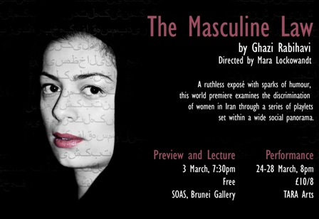

|
|

گفتگو با قاضی ربیحاوی نویسنده و مارا لاکووانت کارگردان نمایش قانون مذکر
ایپزودهایی درباره برابری
گفتگو: آزاده فرامرزیها
پنج شنبه8 اسفند 1387
قانون مذکر نمایشنامه ایست درباره زنان و قوانینی که زندگی آنها را دگرگون کرده و به بررسی مسائل و مشکلاتی که این قوانین در جامعه ایجاد کرده می پردازد. این نمایشنامه که مشخصا از کمپین یک میلیون امضا الهام گرفته و موارد قانونی مورد اعتراض کمپین را مطرح می کند قرار است 24 تا 28 مارس در لندن اجرای عمومی داشته باشد. دراین باره گزارش - گفتگویی داشتیم با دست اندرکاران این نمایش که می خوانید.

قاضی ربیحاوی نمایشنامه نویس ایرانی ساکن لندن و نویسنده قانون مذکر می گوید "تنها چند هفته بعد از اعلام موجودیت کمپین بود که خبر آن را شنیدم و بعد مطالب مربوط به آن را مطالعه کردم، پس از خواندن متن بیانیه ی اصلی کمپین متوجه شدم که یکی از مهمترین، انسانی ترین و شجاعانه ترین متن های چندین سال اخیر را خوانده ام".
تاثیر متن بیانیه کمپین بر آقای ربیحاوی باعث شد توجه وی به مسائل مربوط به کمپین جلب شود. پس از آن وی به بررسی تاثیر قوانین مورد اعتراض کمپین در زندگی زنان پرداخت: " متن بیانیه کمپین را بارها خواندم و خواندم، آنقدر که برای مدتی مهمترین موضوع زندگی من شد، حالا دیگر نه تنها فقط متن بیانیه بلکه هرچیزی که در این مورد بود را بررسی می کردم، نمونه هایی درباره خانواده هایی که فشار این قوانین بافت زندگی آنها را عوض کرده است خواندم ، بعضی از واقعیت هایی که در داخل کشور در حال اتفاق می افتند جداً دردناکند، شنیدن خبر جدا کردن مادری از فرزند(و بالعکس) آن هم فرزند خردسال و به زور، همیشه دردناک است، خبر فرستادن جوانی به خانه همسر به زور همیشه دردناک است، و خیلی مسایل دردناک دیگر که باید به آنها گفت مشکلات، و خود شما در حال حاضر علیه آنها مبارزه می کنید".
مارا لاکووانت کارگردان جوان بریتانیایی توسط این نمایشنامه با کمپین یک میلیون امضا آشنا شده است. او می گوید: "دغدغه های گوناگونم در عرصه تئاتر مرا به سمت موضوعات اجتماعی کشاند و وقتی با آقای ربیحاوی صحبت کردم نسبت به مسئله زنان در ایران کنجکاو شدم. او در واقع امیدوار بود که از طریق این متن بتواند آگاهی عمومی نسبت به شرایط زنان در ایران را افزایش دهد و این برای من بسیار جذاب بود که چگونه یک نمایش می تواند در اجتماع پیرامونش آگاهی و حتی تغییر ایجاد کند".
نمایشنامه قانون مذکر دارای 21 اپیزود کوتاه چند دقیقه ای است که به گفته نویسنده آنها "قوانین موجود علیه استقلال، آزادی و حقوق زن را نشان داده، تعریف می کند و طبعاً مورد انتقاد قرار می دهد" . کارگردان نمایش معتقد است هر کدام از این اپیزودها " همچون ابزاری برای آموزش و برانگیختن مخاطب و ایجاد تفکر در او به کار می روند. " ما معتقدیم که صدای زنان ایرانی باید به گوش همه جهان برسد و ما افتخار می کنیم که در این راه به آنها بپیوندیم".
سادگی یکی از ویژگیهای نمایشنامه است که هم نویسنده و هم کارگردان توجه بسیاری به آن نشان داده اند. قاضی ربیحاوی می گوید" تلاش زیادی کردیم تا زبانی کاملاً هنری و ساده به کار برده شود تا موضوع تاثیر بیشتری در تماشاگر داشته باشد.تماشاگر این نمایش که با عنوان "قانون مذکر" بر صحنه خواهد آمد هیچگاه به طور مستقیم با شعار و بیانیه مواجه نخواهد شد، بلکه فقط نمایشی می بیند که گاه او را به گریه می اندازد و گاه به خنده های بلند، ولی در نهایت هدف اصلی این نمایش بازخوانی دوباره بیانیه کمپین است و جهت تقدیر از کمپین و برای تقویت صدای آن نوشته شده ".
مارا در پاسخ به این پرسش که چگونه اطلاعات مورد نیاز درباره شرایط زنان در ایران را به دست آورده است می گوید: "بیشترین کمک را دوستان ایرانی در لندن به من کردند که کتاب ها, مجلات, فیلم ها, عکس ها و مهمتر از همه داستان های زندگی خود و اطرافیانشان را در اختیارم گذاشتند. به علاوه از وب سایتها, از جمله وب سایت کمپین نیز اطلاعات بسیاری درباره قوانین موجود دریافت کردم".
این نمایش به زبان انگلیسی اجرا می شود که نشان از مخاطب غیر ایرانی آن دارد و به گفته آقای ربیحاوی امکان برقراری ارتباط با بیشتر اروپاییان و رساندن پیام کمپین به گوش آن ها را ایجاد می کند" فکر کردم زبان انگلیسی می تواند صدای ما را با وسعت بیشتری منتشر کند. درضمن هیچ نگرانی هم ندارم که عده ای این کار را یک کار سیاسی خطاب کنند و انگ سیاسی به آن بزنند، اولاً آنان که با کمپین و با هواداری از آن مخالف هستند خود را مجاز می دانند هر انگ و اتهامی را به کار ما بزنند و دوم اینکه لازم می دانم توضیح بدهم این کار اصلاً کار سیاسی نیست، بلکه فقط حرکتی صنفی و فرهنگیست. چون من کار کمپین را یک کار صنفی می دانم، عده ای که در یک جنسیت هستند و به دلیل وضعیت فیزیکی و بدنی دارای خواست های مشابه هستند اینک برای حقوق پایمال شده خود به پا خاسته اند، بدون اینکه قصد سقوط یک رژیم و آوردن رژیم دیگری را داشته باشند، آنان به دنبال تغییر این چند مورد قانون هستند که دست و پایشان را به عنوان زن بسته است، فقط همین".
این نمایش توسط کمپانی " روزنه امید" (Silver Lining) تهیه شده و یک بار در ماه آگوست به صورت نیمه عمومی متن – خوانی شده است. مارا می گوید" ساختار بخش بندی شده نمایش مورد توجه مخاطبان قرار گرفت و بسیاری معتقد بودند موجز بودن پیام هر اپیزود آن را تاثیر گذارتر می کند. اما به هر حال ما به دنبال جلب نظر مخاطب و تائید و تصویب او نیستیم, ما می خواهیم تماشاگر را مجبور به تفکر کنیم و اگر در این کار موفق شویم به هدف اصلی خود رسیده ایم".
قانون مذکر از 24 تا 28 ماه مارس در لندن به روی صحنه می رود. برای دریافت اطلاعات بیشتر و آگاهی از کارهای آینده این گروه به وب سایت www.silverliningtheatre.com مراجعه کنید.